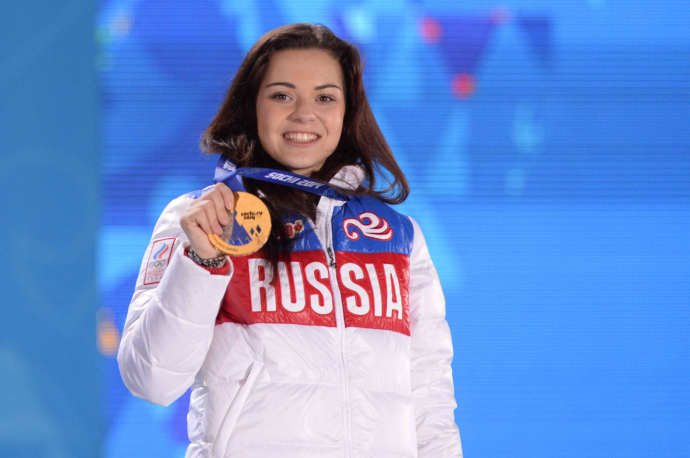

Фигурное катание
Победитель: Аделина Сотникова
Россиянка Аделина Сотникова – олимпийская чемпионка Игр-2014 в Сочи: это первое в истории золото России в женском одиночном катании. Победительница набрала 224,59 балла. Второй стала чемпионка Ванкувера-2010 кореянка Юна Ким. Третьей – итальянка Каролина Костнер. Еще одна представительница России, олимпийская чемпионка Сочи-2014 в командных соревнованиях Юлия Липницкая – пятая.